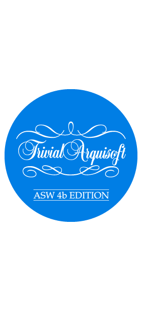

Acerca de Trivial4b
El proyecto Trivial4b consiste en el desarrollo de un juego estilo Trivial. A lo largo de varias fases y entregas se desarrollarán tres versiones:
Extract4b
Versión de consola para importación de preguntas.
Game4b
Versión de escritorio del juego.
Web4b
Versión web del juego.

Código fuente
El código de los diferentes módulos Maven está disponible en GitHub. En los siguientes enlaces puedes descargarlos comprimidos.
Manuales formato wiki
Los manuales del usuario y del desarrollador los puedes encontrar en la wiki del proyecto GitHub, en los siguientes enlaces.
Documentación de arquitectura
Podrás consultar la documentación de los diferentes módulos en los siguientes enlaces.